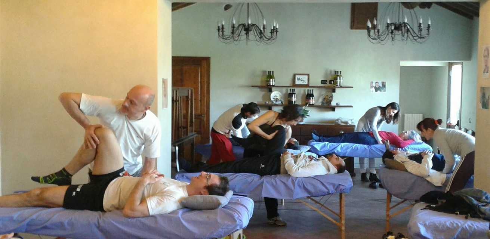

Osteopathic Lecturing
What do you offer?
- I offer independent, post-graduate lectures, courses & workshops, in the UK & internationally, on aspects of osteopathy.
- In the UK, these are mapped to the Osteopathic Practice Standards (OPS) & count towards you continuous professional development (CPD).
What do you teach?
- I specialise in an American osteopathic manipulative technique (OMT) called Still Technique.
- I've also lectured on manipulation, anatomy & osteopathic principles.
How do you teach?
- The Still Technique course is 2 days of practical, supervised face-to-face workshops. It runs for 1 day over 2 weekends or 2 days over a single weekend. Shorter formats are possible on request.
- In the UK, Still Technique courses are sometimes delivered with my colleague, Glynn Booker, with whom I have developed the course.
- Other practical workshops are face-to-face.
- Lectures are face-to-face or online.
Who have you worked with?
- In the UK: CPD Today, BSO, UCO, Manus Sinistra (UCO SU), College of Osteopaths, Central Sussex Osteopaths, London Osteopathic Society, Midlands Osteopathic Society, Waltham Forest Osteopathic Group.
- In the EU: CPO Fulford DO (Italy), Rehaintegro (Poland), Panta Rhei (Netherlands).
What are your qualifications & experience?
- I have a Post-graduate Certificate in Academic Practice (PgCAP) & am a Fellow of the Higher Education Academy (FHEA).
- I have taught in academic & clinical roles at the British School of Osteopathy (BSO), now the University College of Osteopathy (UCO), since 2002.
- I have been delivering independent CPD lectures since 2010.
How much do you charge?
- Face-to-face courses/workshops: day rate + expenses
- Lectures: fee negotiable depending on topic & length of lecture.
How do I book you?
- Please contact me directly on via my phone number, email or social media accounts.
For a flavour of my Still Technique workshops, why not have a look at the Gallery?


I'm happy to answer any further questions when you contact me. To make an appointment, please call +44 (0) 7871 836785 or email me at jonedisosteopath@gmail.com